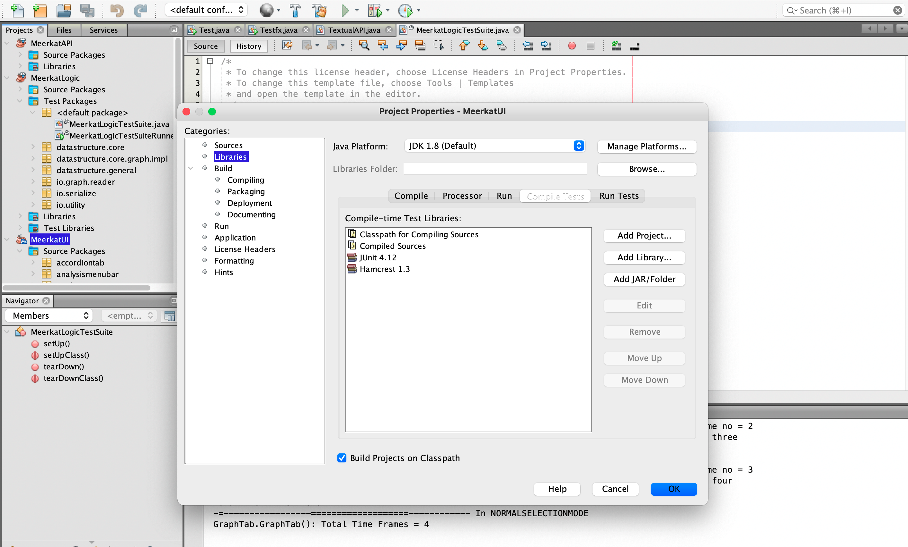
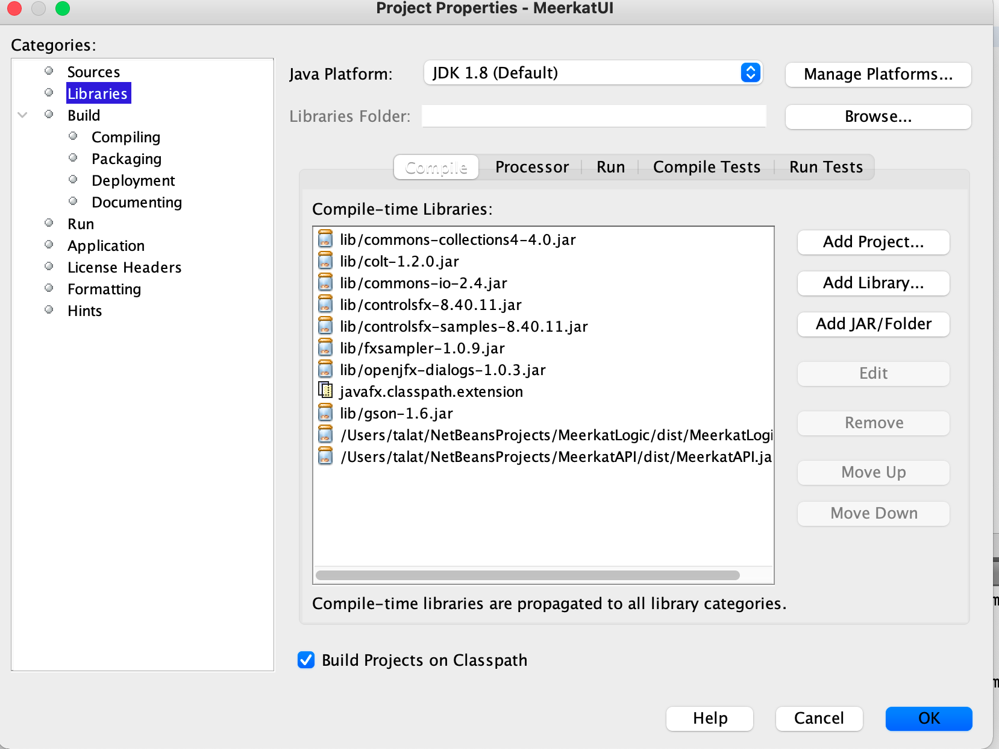

This tutorial guides you through the steps needed to configure your development environment for MeerkatProject.
MeerkatProject is a data analytic tool for analyzing networks of entities (both static and dynamic). The application is predominantly developed using Netbeans IDE on Linux and requires Java version 1.8.0 build 45 or later.
The project is divided into three parts:
Recommendation: Use Netbeans IDE 8.2 for best compatibility.
To obtain a functioning version of MeerkatProject, compile the projects in the following order:
After building each project, add its generated jar file to the next project.
Right-click on the project → Properties → Libraries → Compile Test tab → Add Library → JUnit 4.xx. Repeat for the Run Test tab.

Right-click on the project → Properties → Libraries → Compile Test tab → Add Library → Hamcrest.
dist folder. Compile MeerkatLogic first, then MeerkatAPI, and add the corresponding jars accordingly.

Following these steps will set up your IDE for MeerkatProject, and you'll have a fully functioning environment to start development.